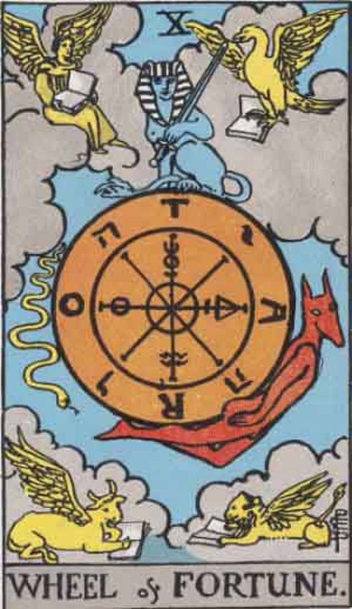

The Major Arcana through Cocktails
0: The Fool

The Fool stands for each of us as we begin our journey through the Major Arcana.
Fresh start: spontaneity, innocence, folly.
“All growth is a leap in the dark, a spontaneous unpremeditated act without benefit of experience.” — Henry Miller
Brave Bull: Source
- 2 parts blanco tequila
- 1 part Kahlua
- lemon twist to garnish
Stir & strain into short glass on the rocks
X-Factor = add cream/milk, dust with nutmeg
I: The Magus
- Upon coming to our senses, we immediately encounter two figures. The first is the Magician, who deals with the active power of our conscious awareness.
- The Creative Impulse: TKTK
“In everything natural there is something marvelous.” — Aristotle
French 75 Source
- 1 ounce gin
- 1/2 ounce lemon juice, freshly squeezed
- 1/2 ounce simple syrup
- 3 ounces Champagne (or other sparkling wine)
- Garnish: lemon twist
X-Factor = color changing B'lure
II: The High Priestess
- The second figure is the High Priestess who represents our mysterious, unconscious mind. She is our unrealized potential waiting to be expressed.
- Silence, tenacity, mystery, wisdom
"The intuitive mind is a sacred gift" - Albert Einstein
Basil Spritz: Source
- ½ part Gin
- ½ part Pear liqueur
- ½ part Lemon juice
- 4 leaves Basil
- 2 parts Sparkling water
- 3 parts Sparkling white wine
X-Factor = Fresh Basil
III: The Empress
- Now that we are aware of our surroundings, we first recognize our mother, the Empress. She represents mother earth who nutures and supports us.
- Fruitfulness, action, initiative, length of days
“Earth and sky, woods and fields, lakes and rivers, the mountain and the sea, are excellent schoolmasters, and teach some of us more than we can ever learn from books.” — John Lubbock
Whiskey Shandy: Source
- 2-4 leaves fresh marjoram
- 1 3/4 ounces Old Forester 100-proof bourbon
- 3/4 ounce grapefruit juice, freshly squeezed
- 1/4 ounce lemon juice, freshly squeezed
- 1/4 ounce simple syrup
- 3 ounces Deschutes Fresh Squeezed IPA, chilled
- Garnish: grapefruit twist
X-Factor = Beer Cocktail!
IV: The Emperor
- Standing behind our mother is our father, the Emperor. He stands for structure and authority.
- Stability, power, protection, logic, realization
“Order marches with weighty and measured strides; disorder is always in a hurry.” — Napoleon I
Sherry Old Fashioned
- 2 oz bourbon
- 1/2 oz sherry
- chocolate bitters
- bar spoon of simple syrup
- garnish: cherry
V: The High Priest
- We say goodbye to family and head out into the world to gain formal education, represented by the High Priest.
- Knowledge, conformity, belonging.
"Education is not the filling of a pail, but the lighting of a fire." — William Butler Yeats
Harvard Cocktail
- 2 ounces cognac
- 1 ounce sweet vermouth
- 1 scant barspoon grenadine
- 2 or 3 dashes Angostura bitters
- Club soda
VI: The Lovers
- Relationships and choices / Adam and Eve
- Attraction, love, beauty, trials overcome
- Fruit of the tree of knowledge (apple)
"Love has reasons which reason cannot understand." - Blaise Pascal
Between the Sheets
- 1 oz light rum
- 1 oz cognac
- 1 oz triple sec
- 1/4 oz lemon juice
- Garnish lemon twist
VII: The Chariot
- After completing our education and experiencing first love, we feel in complete control of our fate. We are the assertive, self-confident charioteer.
- Triumph, presumption, discipline, will power, ego.
All you need in this life is ignorance and confidence, and then success is sure. - Mark Twain
Black and White: Source
- 1 bar spoon black cocoa powder
- ¾ ounce dark rum
- 1¼ ounce simple syrup
- 1 ounce white rum
- ½ ounce coconut rum
- 1 ounce heavy cream
VIII: Strength
- When faced with new challenges, we draw on the quality of Strength. We must develop our courage and resolve to keep going despite setbacks.
- Power, energy, action, courage, magnanimity
“There is nothing so strong as gentleness and nothing so gentle as real strength.” — St. Francis de Sales
Lion's Tail: Source
- 2 oz bourbon
- 0.5 oz california spiced liquor
- 0.5 oz lime juice
- 0.5 oz simple syrup
- 4 dashes aromatic bitters (Angostura works well)
IX: The Hermit
- All of our success is worthless without an answer to the simple question, "Why?" We become absorbed with the search for answers and meet the Hermit, who represents the need to find deeper truth.
- Prudence, circumspection, solitude
"If you are lonely when you're alone, you are in bad company." - Jean-Paul Sartre
Alpine Negroni: Source
- 1 oz gin
- 3/4 ounce Suze
- 3/4 ounce Cocchi Americano
- 1/2 ounce génépy
- 1 barspoon white crème de menthe, preferably Tempus Fugit
- 3 dashes lemon bitters
- 1 dash saline solution(1:1, salt:water)
X: The Wheel of Fortune

- As an answer to our seeking, we are rewarded with a brief vision of the world's wondrous design - the Wheel of Fortune is a symbol of the mysterious universe whose parts work together in harmony.
- Destiny, fortune, success, elevation, luck, felicity
"From Hollywood, it's the Wheeeeeeeeeeeeel of Fortune! America's most popular game show!" - Pat Sajak
The (Vanna) White Lady: Source
- 2 ounces gin
- 1/2 ounce orange liqueur or triple sec
- 1/2 ounce lemon juice, freshly squeezed
- 1 egg white
X-Factor: glitter
XI: Justice
- Having glimpsed the wheel of fortune, it is time to take responsibility for our past actions so we can make amends and ensure a more honest course for the future.
- Equity, rightness, probity; triumph of the deserving side
"We are fighting for an unapologetic movement for economic, social, and racial justice in the United States." - Alexandria Ocasio-Cortez
Justice & Equali-tea: Source
- 1½ OZ. COGNAC
- ¾ OZ. AGED RUM
- ⅓ OZ. BREWED BLACK TEA
- 1 TSP. FRESH LEMON JUICE
- 1 TSP. GÉNÉPY (OR SUBSTITUTE CHARTREUSE)
- CHILLED CHAMPAGNE
XII: The Hanged Man
- Taking responsibility for oneself is not always enough to make the world better, sometimes self-sacrifice is necessary. The Hanged Man is a depiction of the Norse god Odin, who suspended himself from a tree in order to gain knowledge.
- Wisdom, circumspection, discernment, trials, sacrifice, intuition, divination, prophecy.
"I think that the good and the great are only separated by the willingness to sacrifice." - Kareem Abdul-Jabbar
Rum Flip: Source
- 1 1/2 ounces dark rum
- 1/2 ounce heavy cream
- 1 teaspoon granulated sugar
- 1 fresh egg (whole)
- Garnish: grated nutmeg
XIII: Death
- At times, inexorable change seems to be crushing us, but eventually we rise up to discover that death need not refer to physical death. It is simply a transition to a new, more fulfilling way of life.
- End, mortality, destruction, corruption
“Life is a great sunrise. I do not see why death should not be an even greater one.” — Vladimir Nobokov
Death in the Afternoon Source
- 1 1/2 ounces absinthe
- 4 1/2 ounces chilled Champagne
- simple syrup (optional)
XIV: Temperance
- So far on our journey, we've swung wildly back and forth on an emotional pendulum. Now, we must realize the balancing stability of temperance.
- Economy, moderation, frugality, management, accommodation
"If one oversteps the bounds of moderation, the greatest pleasures cease to please." - Epictetus
Revitalizer (NA): Source
- 9 oz carrot juice
- 15 oz apple juice
- 2.25 oz ginger syrup (1:1 ration ginger juice/sugar)
- .75 oz lime juice
15: The Devil
- The Devil represents the Fool's involvement in materialism and complacency
- Ravage, violence, vehemence, extraordinary efforts, force, fatality
"Don't you know there ain't no devil, it's just god when he's drunk." - Tom Waits
El Diablo Source
- 1 1/2 ounces reposado tequila
- 1/2 ounce creme de cassis
- 1/2 ounce lime juice, freshly squeezed
- 3 ounces ginger beer
- Garnish: lime wedge
16: The Tower
- How can we escape the Devil? Only by breaking out of the tower: the ego fortress each of us has built around our inner self.
- Misery, distress, indigence, adversity, calamity, disgrace, deception, ruin
"Adversity is the first path to truth." - Lord Byron
Ramos Gin Fizz via America's Test Kitchen TKTK
17: The Star
- Radiant stars shine in a cloudless sky serving as a beacon of hope and inspiration.
- Hope and bright prospects
"All human wisdom is summed up in two words; wait and hope." - Alexandre Dumas
Starfruit Cocktail: Source
- 1/2 fresh star fruit, deveined, plus slices for garnish
- 1/3 cup Grand Marnier
- 3 cups ice cubes
- 1/2 cup white rum
- 1 cup freshly squeezed orange juice
18: The Moon
- The Moon stimulates the creative imagination. It opens the way for bizarre and beautiful thoughts to bubble up from the unconscious, but deep-seated fears and anxieties also arise. These experiences may cause the Fool to feel lost and bewildered.
- Hidden enemies, danger, calumny, darkness, terror, deception, occult forces, error
"Reality is merely an illusion, albeit a very persistent one." - Albert Einstein
Frozen Toasted Coconut Moonshine: Source
- 6 oz. moonshine
- 2 cups coconut milk
- Mint Simple Syrup
- Juice of 2 limes
- 2-4 cups of ice
- mint leaves, for garnish
- toasted coconut flakes, for garnish
19: The Sun
- The Sun's illumination shines in all the hidden places. It dispels the clouds of confusion and fear. It enlightens, so the Fool both feels and understands the goodness of the world.
- Material happiness, contentment
"Contentment is the only real wealth." - Alfred Nobel
Spicy Tequila Sunrise: Source
- 3/4 ounce tequila, preferably Cabeza
- 3/4 ounce mezcal, preferably Montelobos
- 4 ounces orange juice
- 2 ounces bitter orange juice
- 3/4 ounce hibiscus-habanero syrup
X-Factor = spicy!
XX: Judgement
- The Sleeping Dead are emerging from crypts or graves, calling back to the Book of Revelation chapter 20, where the sea gives up its dead.
- judgement, rebirth
"Don't wait for the last judgment - it takes place every day." - Albert Camus
Corpse Reviver No. 2: Source
- Absinthe, to rinse
- 3/4 ounce London dry gin
- 3/4 ounce Lillet blanc
- 3/4 ounce orange liqueur
- 3/4 ounce lemon juice, freshly squeezed
XXI: The World
- The World represents an ending to a cycle of life, a pause in life before the next big cycle beginning with the fool.
- Assured success, recompense, voyage, route, emigration, flight, change of place
"The end of all our exploring will be to arrive where we started." - TS Eliot
The Last Word: Source
- 3/4 ounce gin
- 3/4 ounce green Chartreuse
- 3/4 ounce maraschino liqueur
- 3/4 ounce lime juice, freshly squeezed
- Garnish: brandied cherry (optional)